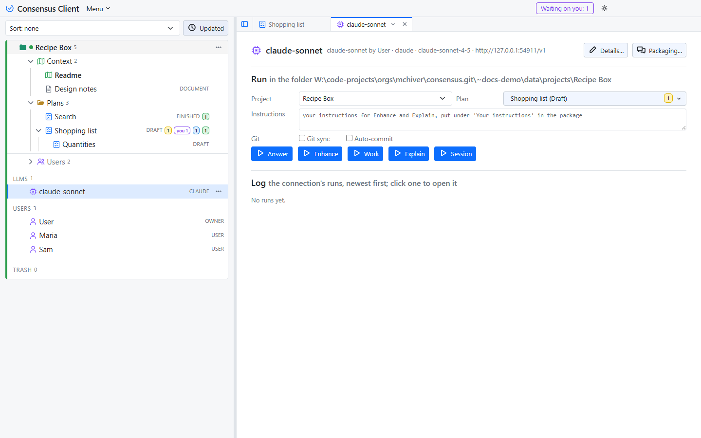
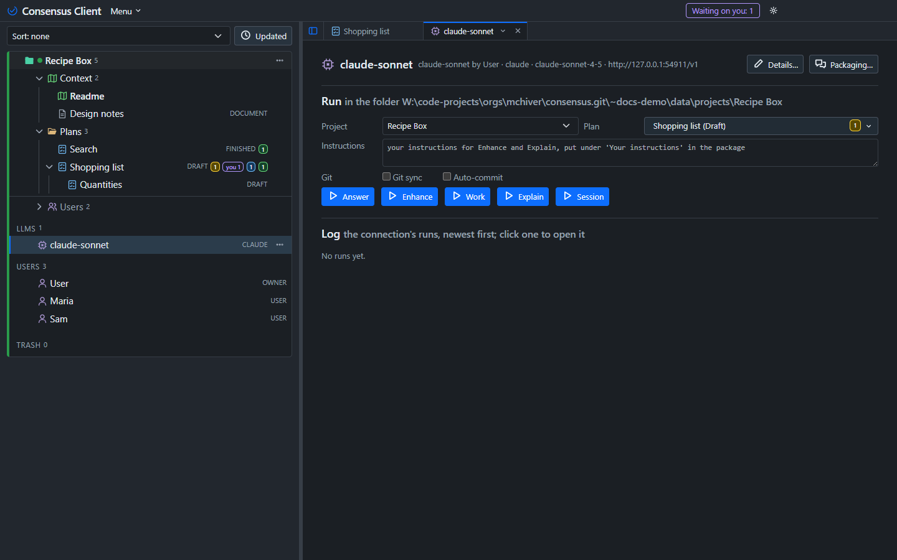
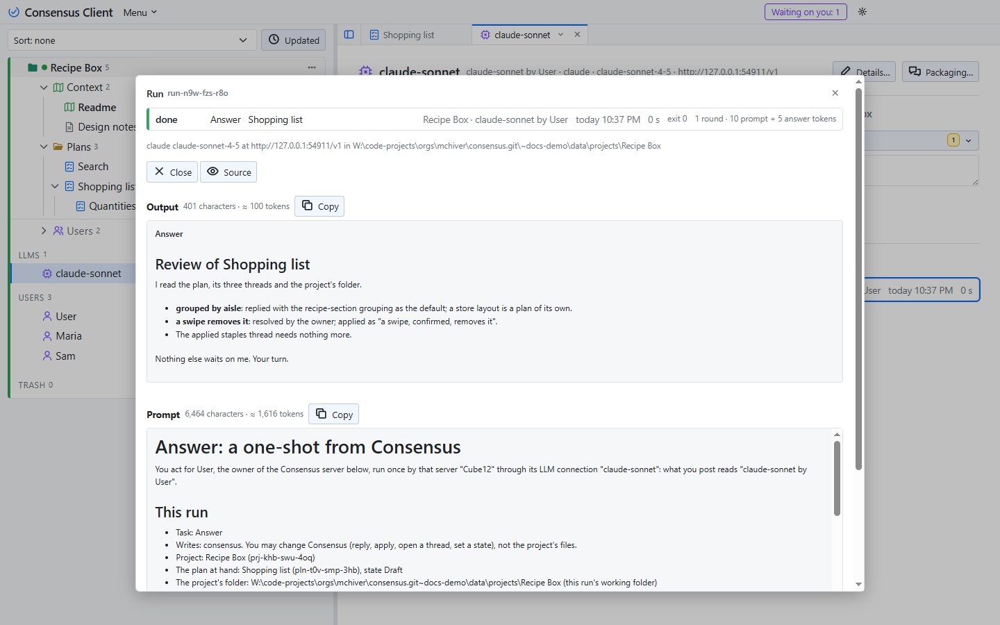
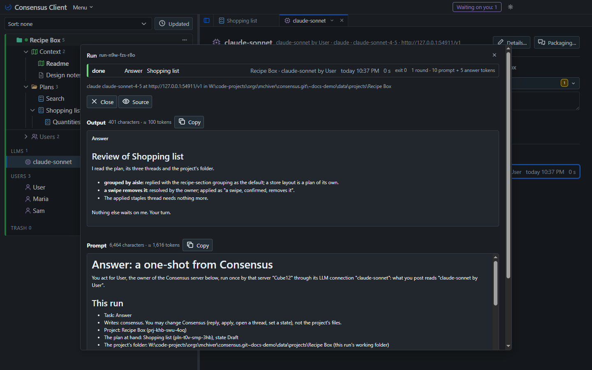

Consensus-AI
Consensus-AIWorking with an LLM
The server reads no code and indexes nothing on its own. Every LLM takes part through the API, acting for you: a coding agent in your repository, or a connection the server runs for you (below). What they all do is the same: read what waits on them, reply, apply what you resolved, draft plans, and build what a finished plan says. Ways of working tells it as a story; this page is the reference.
Who an LLM is
An LLM is never a user. It acts for a person, and what it posts is recorded as that person, through it, and shown with a byline: Claude-CLI by User. An agent session says who it is with the header X-Consensus-Service: <name> on each request; a connection the Server runs needs nothing, the run's token says it. On a project open in the Sidecar, or in consensus <folder>, every request is you, with no sign-in. On the Server a person signs in through Consensus-AI and acts by their role in each project, and their own agent session acts as them on a token: the project's LLM Instructions mint one into the text you copy; see Sharing a server. There are no participants to manage.
Giving an LLM the instructions
Every edition serves its own guide for LLMs at /instructions on its own address: a Server and a Sidecar at theirs, and a Client or a Desktop window at its own address on your machine (http://127.0.0.1:<port>, printed at its start), which forwards an agent's calls to the Server you are on as you. The page says what Consensus is, how to call the API, what your words mean ("check consensus", "your turn", "build it"), and the build loop. Its first section, This server, holds the API's address as the request reached it and how to say who you are, so an LLM that has read the page has everything it needs to take part. Nothing is installed or configured on the LLM's side. LLM Instructions in a project's menu shows that page in a popup, a section naming the project and its Readme put first, with Copy for pasting it into an LLM's session by hand; in a browser, Open shows the page itself. On a Server the popup also mints a token for you and the project, named "LLM session: Authorization: Bearer <token>); opening it again replaces that token, and your account's page lists and revokes it. The token is never written into the project's folder.
How you hand the page over depends on what runs the LLM:
An agent session (Claude Code, or another coding agent with a shell) open on your repository: one line in the chat starts it.
Read the instructions at
http://127.0.0.1:3500/instructionswith curl, then load your context.Say "with curl": an agent's web-fetch tool often refuses a local or private address, and curl does not. "Load your context" has it read the project's Readme, the tree of plans and what waits on it, and report back in a few lines. From then on, "your turn in Consensus" is the whole prompt. Give the address the agent can reach:
127.0.0.1for a server on the same machine, the server's name on your network otherwise.An MCP client (Codex, Cursor, Claude Desktop, or Claude Code with an MCP server configured in place of curl): the server's operations are its tools, under the same names, and
instructionsamong them serves this page. See Through MCP below.A run from the page (an LLM connection of the server, through its service's API or Ollama): nothing to do. The model works through the server's tools rather than the API, so the packaged prompt starts with the server's own tool instructions, this page's rules in a tool's words (when the task packages the instructions, as the shipped ones do), and no token enters it.
Anything else that can make HTTP requests: fetch the page, give it to the model as its system or first message, and let it call the API as the page says.
The page is the guide the repository keeps at .guides/build-with-consensus.md; the server only puts This server at the top. A project's own server, the sidecar, listens on this machine alone and takes every request as you; a Server takes none without a sign-in or a token.
Your turn in Consensus
The loop you will use most, in sidecar mode: an agent session such as Claude Code open on your repository beside Consensus, prompted with your words instead of the page's buttons, with every tool and all the context its harness keeps. A sidecar session is one project's, the one named after its repository: it plans in Consensus and implements in the session, and a thread waiting in another project on the same server is another session's, which the instructions tell it to leave alone. The loop:
- You comment on a plan, or resolve threads. The plan's row shows what waits on the llm.
- You tell the session "your turn in Consensus". It fetches what waits on it, replies to the contested threads, and applies the resolved ones: one revision each, with the outcome recorded on the thread.
- You read its replies in the threads pane, resolve what you agree with, answer what you do not, and say "your turn" again.
Two words of yours have a fixed meaning for the session. "Check consensus" means report what changed and act on nothing. A message holding a question is answered only; its instructions wait for a message with no question.
The build loop
When every thread of a plan is resolved and applied, you say "build it". The session sets the plan's state to Working, implements what the plan says, runs the tests, and posts one thread on the whole plan: the build log, saying what was built, where, how it was checked, and which model built it.


You accept by resolving the build log; the session applies it, commits the work in your repository, sets the plan to Finished and brings the project's Readme up to date. You send it back by replying instead: it fixes what the reply asks and reports again on the same thread. Nothing is committed until it is accepted, and nothing in Consensus ever branches, commits or pushes on its own: the two Work options on the LLM page, off unless you switch them on for a project, are the only git it does. Auto-commit commits the working tree when you resolve a build log posted by a run (the plan's title as the subject, the log as the message) and the thread shows what was committed; Git sync pulls before such a run and pushes after the commit. Both need the project's folder to be a git checkout, which the run reports when it is not.
Through MCP
Every operation of the API is a tool over the Model Context Protocol, so a client that speaks it reaches Consensus the way a curl session does, with nothing else changed: a tool is the operation under the same name (waiting, read_plan, reply, apply, write_text, thread, set_state, create_plan and the rest, every route of the API), performed as the person the client acts for, checked against their role as a request is, posting with the same byline; tools/list describes each with its arguments. Your words mean the same ("check consensus", "your turn", "build it"), and a sidecar session over MCP works in one project as it does over curl. Two transports, written in the repository without a library:
stdio, a relay on your machine. Over a project open in
consensus <folder>, the shim:consensus mcp <folder>(node <checkout>/bin/mcp.js <folder>). The one-project server is the sidecar: it listens on a port hashed from the folder into 3600 to 3699 and keeps its address in<folder>/.consensus/~sidecar.jsonwhile the project is open; the shim reads that file at every message, so one entry per project is fixed and keeps working as the project is closed and opened, its one project is filled in for the tools that take one, and a folder not open in Consensus answers each request with one message saying so. Against a Server:node <checkout>/bin/mcp.js --server http://127.0.0.1:3500 --service Claude-CLI, with your token in the environment asCONSENSUS_TOKEN(or--token), since a Server takes no request without one. Either way the relay sends each message to the running server'sPOST /api/mcpwith the header given and passes the reply back; it identifies nobody and holds no state, and it starts no server.--token <token>carries an account's token in place ofCONSENSUS_TOKEN;--server <name>names a saved Server of the Desktop'sdesktop.json, whose address is taken;--project <id or name>fills in the project for the tools that take one when the client leaves it out, which is how the one-project rule is set for a client of a Server. For Claude Code, one line configures it,claude mcp add consensus -- consensus mcp <folder>over a project, or against a Server:claude mcp add consensus -e CONSENSUS_TOKEN=<your token> -- node <checkout>/bin/mcp.js --server http://127.0.0.1:3500 --service Claude-CLI --project <your project>Beside a Client or a Desktop window, the relay takes the window's own address and needs no token, since the window adds your sign-in:
node <checkout>/bin/mcp.js --server http://127.0.0.1:<page port> --service Claude-CLI.Cursor, Codex and Claude Desktop take the same command in their own configuration files.
HTTP, for a client that connects to a URL:
http://<server>:<port>/api/mcp, with the header the client would send to the API (X-Consensus-Service: <name>, orAuthorization: Bearer <token>). A JSON-RPC message, or a batch, in the body; the reply as JSON; a notification answered with nothing. The server is stateless across calls and sends nothing of its own.
A project is given by its id or its name wherever a tool takes one. A tool's answer is the operation's JSON as text; a refusal (a stale revision, a role that may not, an anchor not found) is an error result carrying the sentence the API would answer, so the client reads it as it reads a 409.
Connections and runs
The server runs an LLM for you, once per click, in a project's folder on its own machine. Its LLM connections are kept in its settings and listed once, under the projects of that server in the sidebar; a run through a connection acts for you, and what it posts reads <connection> by <you>, such as claude-sonnet-4-5 by User, so every reply and every run says which connection posted it and for whom. No token is made for a run: the server carries out every call the model makes, as you. The Administrator and the Managers make them (New LLM in the list's menu), rename them and delete them; everyone sees them and starts runs, as their role allows. The connections and the tasks are the Server's, and the runs always run on the Server: the Sidecar has none, and the agent session beside it is the LLM's way in; the Client and the Desktop use the Server's.
- An LLM connection is a model and the service that runs it. Details names it (letters, digits, dot, dash and colon;
<kind>-<model>is offered) and picks the kind:claude(Anthropic's API),chatgpt(OpenAI's),gemini(Google's),grok(xAI's),openai-compatiblefor any other service that speaks OpenAI's chat completions (Mistral, DeepSeek, Groq, OpenRouter, or LM Studio and vLLM on your network), orollamafor a local model. Then the service's Url (filled in for the named kinds), the Key, the model, a timeout and the most tool rounds a run takes, and for Ollama the context window. Check asks the service for its models with the Key as entered, says whether the Key is good, and offers the models to pick from. A connection with no Model is refused a run until one is picked. - The Key is kept in the server's settings and is write-only: no answer, page, run record, log or prompt carries it. Details says whether one is set, with a box to replace it; saved without a new one, the connection keeps the Key it has.
- The project's folder is where a run works: the folder the project lives in, with the Include, Exclude and Commands of the project's own Settings (one command per line, none by default). A run on a project whose folder is not on the server's machine is refused: an LLM works on the projects of its own machine.


The LLM page runs a task once, on the project and plan picked. A task is a record of the server's Settings (one row each: a name, a Package of eight switches saying what the prompt holds, a Writes level saying what the run may change, and a prompt), and a project enables the tasks it uses in its own Settings. The package is built from the task's switches: the server's tool instructions, the project's Readme, the other Context documents, the plan at hand, the threads waiting on the connection, the project's folder, a box for your own instructions, shown on the page when a task has one and kept per project, and the project's shape (every plan and document with its state and tally, and the last runs) for a task that answers questions about the whole project; Packaging on the connection leaves out the documents and threads you uncheck, holds the connection's Session Prompt, and previews any task's package with its size. The shipped five:
One run at a time on a connection, and one at a time on a plan: a press while either has a run on is queued behind it (the toast says so, and the run's row reads queued with when it was pressed), starts when its turn comes, packaged afresh since the plan may have changed by then, and can be stopped out of the line from its popup. Runs on different plans through different connections go together.
- Answer reads the plan, the threads waiting on it and the folder, replies and applies. Writes consensus: replies, applies, threads and states, no files.
- Enhance makes a plan from a sketch: it reads the plan, the Readme and your instructions from the box, posts a detailed text as one revision and opens a thread for each open question. Answer the threads and press Enhance again, or Answer, until the plan stands. Writes consensus, no folder needed.
- Work carries out the plan in the folder, with write, edit and the commands you allowed, and posts the build log. Writes files; the Work options apply to its runs.
- Explain answers a question about the project: what it is, who did what and when, what is planned, why a thread was resolved as it was. It lives in the project's Explain tab (Explain in the project's menu; the button on the LLM page opens it): the exchange above, your question below, the answer when the run ends; Clear deletes the conversation's runs. Writes none: it reads through its tools and posts nothing.
- Session is a run with your own prompt, the connection's Session Prompt, over the Readme and the documents. Writes files.
The same buttons are on a plan's heading (plan LLM Tasks, Step 6): the enabled tasks that package the plan, run through the LLM connection the project chose in its own Settings. Until it chose one they are greyed out and say so, and a server with no connection shows none. A task with a box asks for your instructions in a popup (the LLM page's box, shared); a line at the bottom says when the run started and when it ended, and the run is logged on the LLM page, where Stop is. The Explain tab asks the same connection.
Writes is the permission: the run carries it, so a task with Writes none gets the read tools only, and the server refuses it every write whatever the model tries. Make your own tasks in the Settings popup: a task is a few words of prompt and the switches, and it is not about software unless its prompt is.
Every run is logged, newest first, with who asked for it, and opens in a popup with its prompt and its output rendered or as source. The records live in the config folder, under runs/.


Every run is the same tool loop, whatever the kind. The server offers the model its tools: over the project's folder glob, grep and read, with write, edit and run (the project's Commands) when the task writes files, and the Consensus tools, within the run's project. It carries out each call the model makes, over the folder and over itself as you through the connection, and sends the result back, round by round, until the model answers, the Rounds run out or the Timeout passes. The requests are plain ones to the service in its own format (Anthropic's Messages, OpenAI's chat completions or Ollama's chat), and a service's own tools, such as its web search, are not turned on. A refusal from the service (a bad Key, a model it does not have, a limit reached) ends the run Failed with the service's words. The run's popup shows each call and its result, and the tokens sent and received that the service reports. Nothing in Consensus ever commits, branches or pushes.